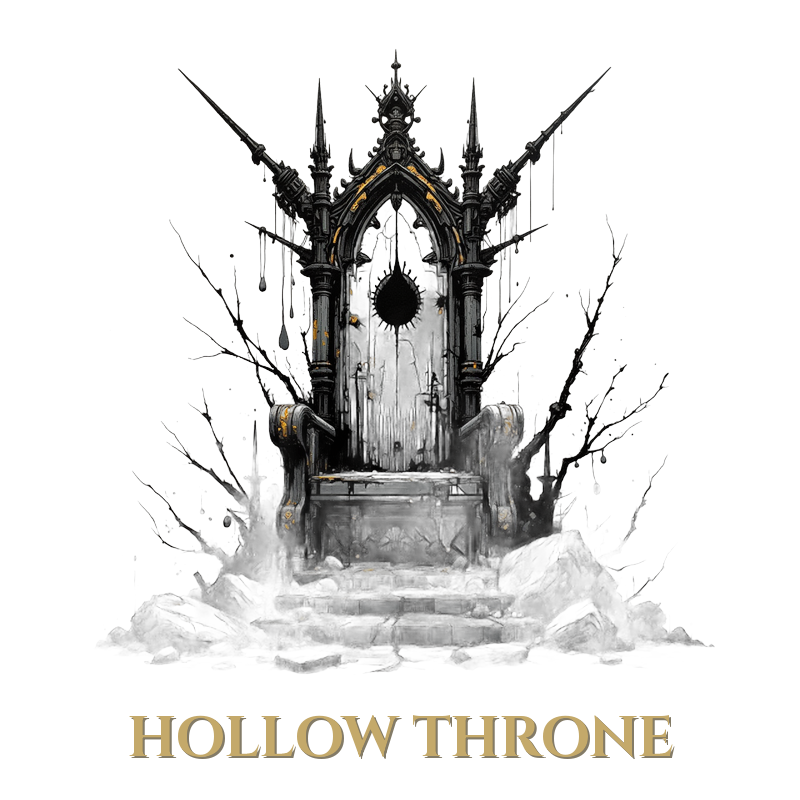

Rulebook
Everything has a cost. Hit hard, burn out.
A dark fantasy 1v1 card game. Everything has a cost. Hit hard, burn out.
Two players, each commanding a unique hero, battle using decks of themed cards. Deploy creatures, cast spells, attach equipment, and invoke powerful enchantments. Win by reducing your opponent's Life Points (LP) or Sanity Points (SP) to zero.
Components per player:
You win when your opponent's LP reaches 0 (killed in combat) or their SP reaches 0 (driven to madness). Both are checked immediately whenever a resource changes. If both players would reach 0 simultaneously, the active player loses.
Permanent cards with ATK (attack power), DEF (health), and SV (sacrifice value). Creatures fight in combat and can be sacrificed for resources.
Summoning sickness: Creatures cannot attack the turn they enter play. They can block and use special abilities.
One-time effects. Two subtypes:
Spells are normally played during your Main Phase. They may also be played during Reactive Windows on your opponent's turn — but any spell played reactively is permanently removed from the game (goes to the Removed zone), even if it would normally be Cycled. Exception: spells with the Reaction keyword follow their normal cycle/burn behavior when played reactively. See Reactive Play for full rules.
Permanent attachments. Attach to a creature or your hero (as specified). One equipment per creature/hero. Attaching a new one sends the old one to discard. Equipment on a dead creature goes to your discard.
Permanent effects that stay on the battlefield. Some have upkeep costs.
Each turn follows these phases in order:
If your deck is empty when you need to draw, reshuffle your discard pile into a new deck and take Toll(2) cycle damage. If both deck and discard are empty, take 1 LP draw damage per missing card instead.
Take any number of actions in any order:
| Action | Cost |
|---|---|
| Play a creature from hand | Pay Essence cost |
| Cast a spell from hand | Pay SP and/or Essence cost |
| Play an enchantment from hand | Pay Essence and/or SP cost |
| Attach equipment from hand | Pay Essence cost |
| Buy from marketplace | Pay buy cost in Essence (card goes to hand) |
| Sacrifice a creature | Free (see Sacrifice below) |
| Exhaust a creature | Use its exhaust ability (if it has one) |
| Discard for Essence | Discard 1 card from hand, gain 1 Essence (no limit per turn) |
| Toll for Essence | Toll(1) to gain 1 Essence — no limit, available at any time including Reactive Windows |
| Use hero power | Pay cost (if any) |
| Activate an ability | Follow card text |
| Declare combat | Once per turn (see Combat below) |
| Pass | End your main phase |
You may take actions before AND after combat.
Combat happens once per turn during your Main Phase.
Choose any number of your ready, non-summoning-sick creatures to attack. Each attacker becomes exhausted.
Attack triggers happen now (Horrify, Warhorse Knight buffs, etc.).
After attackers are declared, your opponent may use a Reactive Window before blockers are assigned.
Your opponent assigns their ready creatures as blockers. Each blocker blocks one attacker. Multiple blockers cannot block the same attacker. An attacker with no blocker deals damage to the defending hero.
Blocking restrictions:
All combat damage is simultaneous.
Either player may play spells during two Reactive Windows on the opponent's turn:
In physical play: after any such action, the non-active player says "I want to respond" before the action resolves. If no response is declared, the action proceeds.
Getting Essence on your opponent's turn requires planning ahead:
During your Main Phase or a Reactive Window, you may sacrifice any creature you control. Choose one:
Sacrifice triggers on the creature resolve first (e.g., Conscript's "deal 1 damage"). Then the creature goes to your graveyard.
| Keyword | Effect |
|---|---|
| Bleed | When this creature deals combat damage, place a bleed token on the damaged target. At the start of that target's controller's next turn, the token deals 1 damage to that creature or hero, then is removed. Card effects may also place bleed tokens directly, independent of combat. |
| Devouring | When this creature deals combat damage to a player, prevent that damage. Instead, remove the top card of that player's deck from the game (Removed zone). |
| Eldritch | When this creature enters play, opponent loses 2 SP. |
| Flying | Can only be blocked by creatures with Flying or Reach. |
| Horrify | When this creature attacks, the defending player loses 1 SP. |
| Mill(N) | Move the top N cards of target player's deck to their Discard pile. If the deck is empty, the effect does nothing for missing cards — the player is not forced to cycle. |
| Reach | Can block Flying creatures. |
| Reaction | This spell follows its normal cycle/burn behavior when played during a Reactive Window, instead of being permanently removed. |
| Shield | Reduce damage from each source by 1. |
| Toll(N) | Lose N total from your LP and/or SP, divided however you choose. Each point is assigned individually (e.g., Toll(2) = 2 LP, 2 SP, or 1 LP + 1 SP). |
| Unique | Only one copy can be in play at a time (per player). |
| Vampiric | When this creature deals combat damage, its controller heals that much LP. |
| Zone | Description |
|---|---|
| Battlefield | Creatures, enchantments, and equipped items in play. |
| Deck | Face-down draw pile. |
| Discard | Used cycled spells, destroyed equipment/enchantments. Reshuffles into deck. |
| Graveyard | Dead creatures. Can be targeted by resurrection effects. |
| Hand | Cards you hold (limit 5 at end of turn). |
| Removed | Permanently out of the game. Contains: Burned spells (single-use spells after use), non-Reaction spells played during Reactive Windows, Unmade creatures, and cards removed by Devouring. Nothing in the Removed zone can be retrieved by any effect. |
When your deck is empty and you need to draw, shuffle your discard pile into a new deck (Toll(2) cycle damage). Your graveyard does NOT reshuffle into the deck. The Removed zone never reshuffles.
A shared pool of neutral cards available to both players.
Buying: During your Main Phase, pay a card's buy cost in Essence. The card goes to your hand. You can play it the same turn if you have the resources.
Stock: 2 copies of each card type. Once both copies are bought, that card is gone.
Draft (setup): Each player secretly picks 3 types. Merge into one list (overlapping picks just count once), then fill remaining slots with random draws to reach exactly 10 types. Always 10 types (20 cards) per game.
Each hero has a unique power:
| Hero | Power | Type | Effect |
|---|---|---|---|
| Bone Tyrant | Grave Touch | Activated (2SP, once/turn) | Return target creature from your graveyard to your hand. |
| Crimson Ranger | Marked Prey | Activated (free, once/turn) | Deal 1 damage to target creature. |
| Iron Warden | Iron Discipline | Passive | At end of turn, heal 1 damage from each of your creatures. |
| Thread-Cutter | Fate's Glimpse | Activated (1E + 1SP, once/turn) | Draw 1 card, then target opponent discards 1 card from their hand. |
| Void Scholar | Arcane Conversion | Activated (1SP, once/turn) | Gain 2 Essence. |
Every time you reshuffle your discard pile into a new deck: Toll(2). Burned spells and dead creatures thin your deck, accelerating reshuffles.
Damage persists on creatures between turns. A creature with 3 DEF that takes 2 damage has 1 DEF remaining. It stays damaged until healed or it dies.
Every discard during the End Phase: Toll(1) — whether voluntary or forced by the hand limit. Discarding cards due to card/creature effects during other phases is free.
If you must draw but have no deck AND no discard pile, take 1 LP per missing card. This is not a Toll — it is LP damage only.
One equipment per creature (or hero). Attaching a new equipment sends the old one to your discard pile.
When you exhaust an equipment card to activate its ability, only the equipment becomes exhausted. The creature or hero it is attached to is unaffected and remains ready.
Essence gathered beyond your hero's income is volatile. At the end of every turn, both players check for unspent non-income Essence. Each point of unspent Essence from non-income sources (sacrifice, discard-for-Essence, Toll-for-Essence, exhaust abilities, hero powers): Toll(1) per point to that player. Essence from your Income Step (hero base + enchantment bonuses) is safe — you are not punished for unspent income. Then all remaining Essence is lost.
Spending order: Income Essence is always spent first. If you have 3 income Essence and 3 generated Essence but only spend 3 total, the 3 income is consumed — the 3 generated Essence remains unspent and triggers Feedback. You cannot choose to "spend" generated Essence first to avoid the penalty.
This applies to both players, not just the active player. If you sacrifice a creature during a Reactive Window on your opponent's turn and gain Essence via Offering, that Essence feeds back at the end of your opponent's turn if unspent. Every resource you actively generate must be spent or it hurts.
Some card effects Unmake a creature instead of destroying it. An Unmade creature is placed in the Removed zone permanently — it does not go to the Graveyard. The creature has not died — no death triggers, sacrifice triggers, or any other leave-play effects fire. It cannot be returned to play by any effect (Grave Touch, Mass Reanimate, Blood Bond, or any other recursion). Only explicit card text that says "Unmake" causes this; normal destruction always sends creatures to the Graveyard.
Turn order: Ready → Draw → Income → Upkeep → Main (combat inside) → End
Essence: Resets to 0 each turn. Gain from: hero income, exhausting creatures, discarding cards, sacrificing (Offering), hero powers, enchantments, Temporal Cache / Spell Vault tokens, Toll(1) (pay 1 LP or SP → gain 1 Essence, any time). Unspent non-income Essence: Toll(1) per point at end of every turn — checked for both players, not just the active player (Feedback).
SP costs: Spells, some enchantments, some hero powers. SP does not regenerate naturally. Recover via: Consume (sacrifice), specific card effects (Clarity, etc.).
Hand limit: 5 cards at end of turn. Draw to 5 + 1 extra at start. Every End Phase discard (voluntary or forced): Toll(1).
Reactive Windows: After opponent casts a spell (Spell Window) or declares attackers (Attack Window), you may play one spell in response. No chains — it resolves immediately. Counter spells cancel the triggering spell. Reactive spells are permanently removed from the game, unless they have the Reaction keyword (which lets them cycle/burn normally). Pay costs via SP pool, Temporal Cache / Spell Vault tokens, creature exhaustion, sacrifice, or Toll(1) for 1 Essence.
Unmade: Creatures removed by Unmake effects go to the Removed zone (not Graveyard). Cannot be recursed.
Win: Opponent LP = 0 or SP = 0.
Card-specific rulings that extend or clarify printed card text. Rules in this section apply only to the named card.
Spell Vault allows cards stored under it to be played at any time on any player's turn — broader than the two standard Reactive Windows.